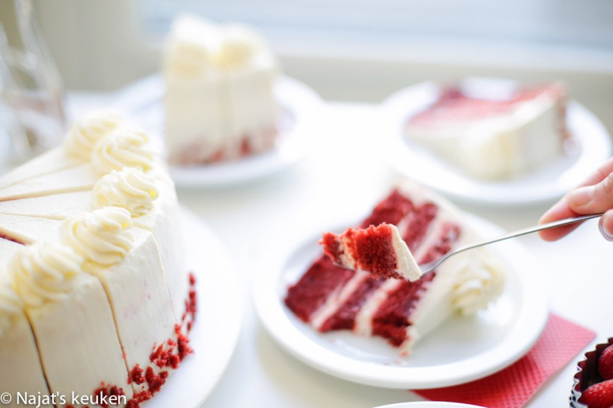

Red Velvet cake

Ingrediënten
- 250 gram bloem
- 3 gram zout
- 5 gram bakpoeder
- 15 gram cacao
- 260 ml karnemelk
- 7 gram rode kleurstof
- 3 eieren
- 260 gram kristalsuiker
- 16 gram vanillesuiker
- 130 gram zonnebloemolie
- 5 gram baking soda
- 4 ml witte azijn
Bereiding
- Doe de bloem samen met het zout, de bakpoeder en de cacao in een diepe kom. Meng goed.
- Doe de karnemelk samen met de rode kleurstof in een kom en meng tot een geheel.
-
Klop de eieren samen met de suiker en vanillesuiker voor 3-5 minuten of tot het een schuimig effect heeft gekregen. Voeg de zonnebloemolie toe aan het eimengsel en mix tot een gladde massa. Voeg het karnemelk- en bloemmengsel een beetje bij
beetje toe. Mix tot een mooie rode beslag.
- Meng de baking soda samen met de azijn. Voeg deze toe aan het rode beslag en spatel goed.
- Vet de bakvorm in en leg er een vel bakpapier op. Voeg de helft van beslag toe. Gebruik twee bakvormen met dezelfde omvang, dat werkt twee keer zo snel. Als je dat niet hebt, kun je dezelfde bakvorm hergebruiken.
- Leg de red velvet cake in een voorverwarmde oven op 175℃ voor 28-32 minuten. Elke oven werkt anders. Houd dit zelf in de gaten.